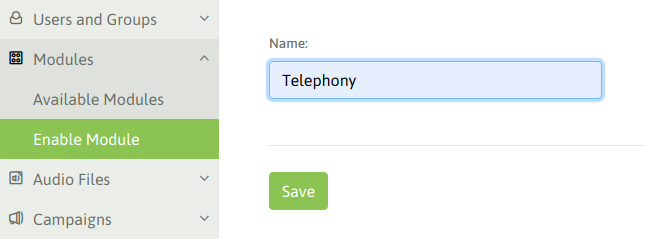
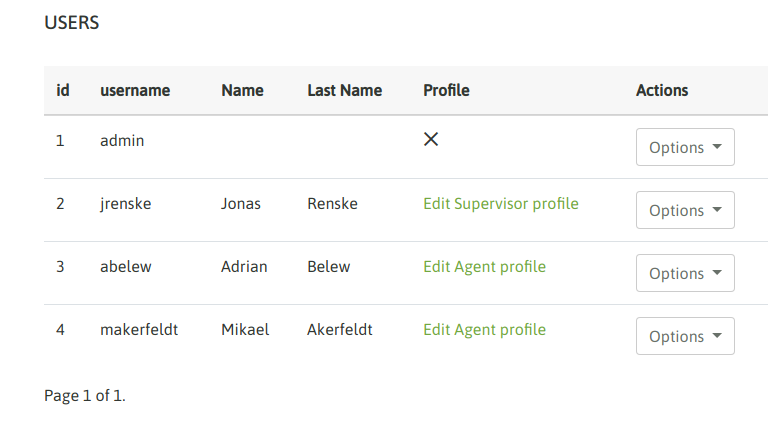
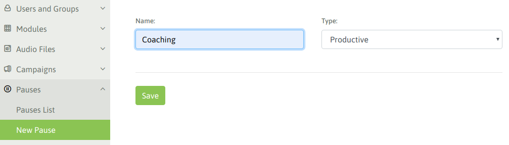
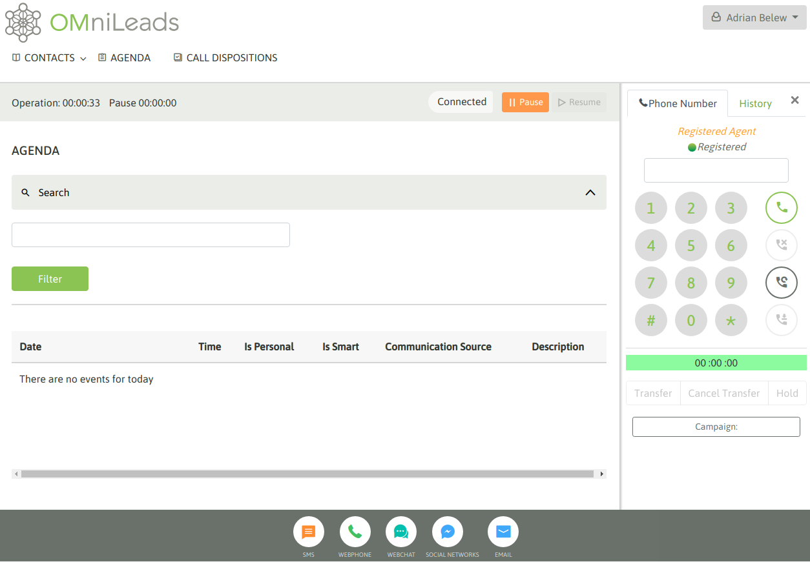

Configuración Inicial¶
Nuestra plataforma se encuentra instalada y por lo tanto disponible para comenzar a configurar todo lo necesario para montar nuetra operación de Contact Center. En esta sección vamos a avanzar con los pasos iniciales como crear nuestro primer usuario supervisor, generar grupos de agentes, agentes y sus pausas, para finalmente concluir el capítulo con un login de agente.
Crear usuario supervisor¶
Lo primero que vamos a realizar es generar un usuario supervisor con el cual desde ahora en más vamos a realizar todas las tareas administrativas del sistema, dejando relegado al usuario «admin» como acceso de último recurso y para el personal de IT.
Para generar un nuevo usuario debemos acceder al punto de menú User list -> New user
Allí completamos los campos solicitados como se ilustra en la figura 1.

Figure 1: new supervisor user
En el paso siguiente del wizard debemos seleccionar el perfil de supervisor, siendo posible seleccionar:
- Supervisor gerente: este perfil de usuario puede gestionar casi todos los menúes de la paltaforma a excepción de las configuraciones de parámetros de telefonía como por ejemplo troncales SIP y enrutamiento de llamadas.
- Administrador: es un super-usuario que posee los mismo permisos que el usuario «admin»
- Cliente: es un perfil que tan solo puede acceder a la supervisión de tiempo real y grabaciones de llamadas sobre las campañas que le fueron asignadas como permitidas.

Figure 2: supervisor / admin
En nuestro caso generamos un usuario supervisor / administrador. A continuación nos logueamos con dicho usuario para continuar las gestiones.
Crear módulo de telefonía¶
En este punto se debe generar cada módulo de sistema, actualmente se dispone de la funcionalidad de telefonía, por lo que vamos a añadir dicho módulo. No obstante hacia el futuro se estarían añadiendo SMS y Chat.
Para generar el módulo de telefonía debemos acceder a Modules -> Enable module
Figure 3: Enable telephony module
Guardamos los cambios y avanzamos !
Crear grupo de agentes¶
Llega el turno de crear los grupos de agentes de nuestro contact center. Para generar un nuevo grupo Usuarios y grupos -> Nuevo grupo de agentes y se desplegará un formulario similar al de la figura 4.

Figure 4: New agent group
Los campos allí desplegados son:
- Name: es el nombre que se desea asignar al grupo de agentes.
- Auto_unpause: para comprender este parámetro debemos explicar que en OMniLeads luego de cada llamada procesada por un agente (de cualquier naturaleza), el agente es forzado a ingresar en una pausa ACW (after call work), en la cual permanece inactivo para las campañas asignadas de manera tal que pueda completar la calificación de la llamada actual y recién seguir operando. Ahora bien, para salir de dicha pausa inducida por el sistema existen dos posibilidades y allí entra nuestro parámetro, ya que por un lado si dejamos el valor en «0» el agente debe salir de la pausa, ahora si colocamos un número (por ejemplo 5 segundos), esto implicará que el agente asignado a este grupo luego de caer en una pausa inducida ACW, el sistema lo vuelva a dejar online a los X segundos (según lo indicado en este parámetro).
- Auto_attend_ics: si este valor está checkeado entonces las llamadas provenientes del Addon de OMniLeads ICS (Interactive Contact System), llamadas derivadas del IVR blaster press-one serán atendidas automáticamente por el agente sin dar la posibilidad de que exista ring en su webphone.
- Auto_attend_inbound: si este valor está checkeado entonces las llamadas provenientes de campañas entrantes serán conectadas al agente sin brindar la posibilidad de ring y answer por parte del agente.
- Auto_attend_dialer: si este valor está checkeado entonces las llamadas provenientes de campañas con discador predictivo serán conectadas al agente sin brindar la posibilidad de ring y answer por parte del agente.
Crear agentes¶
Una vez disponibles los grupos de agentes y su configuración, podemos proceder con la creación de usuario agentes del contact center.

Figure 5: New agent
Se debe seleccionar el grupo de agentes y los módulos disponibles para nuestro nuevo agente.

Figure 6: New agent
Podemos listar nuestros usuarios, deberíamos contar con al menos un par de agentes.
Figure 7: Users
Crear pausas de agente¶
Los agentes pueden entrar en una pausa cada vez que quieran quedar indispuestos para el procesamiento de llamados, de esta manera se evita que una campaña entrante o con discador le asigne una nueva llamada. Además los estados de pausa son útiles para registrar productividad y medir los tiempos de sesión del agente.
Las pausas las pueden generar los supervisores y se clasifican en pausas Recreativas y Productivas.
Figure 8: New pause
A la hora de presentar los reportes de sesión de agente, las pausas totalizadas se dividen en pausas recreativas y pausas productivas. Esto permite medir la productividad de nuestros agentes de una manera más exacta.

Figure 9: New pauses
Una vez generados nuestros agentes, podemos proceder con nuestro primero login de agente !
Primer login de agente¶
Finalmente tenemos todo listo para probar nuestro primer agente.
IMPORTANTE: tener en cuenta que para obtener un login exitoso debemos contemplar dos aspectos, si alguno de ellos no se cumple entonces el login será defectuoso.
- Micrófono disponible: el dispositivo desde el cual opere el agente, deberá contar con un micrófono disponible y configurado a nivel sistema operativo.
- Acceso al sistema por hostname: como bien indicamos en la sección de «primer acceso a OMniLeads», es menester que el acceso a la plataforma sea mediante hostname. Esto quiere decir que para indicar al navegador la dirección de OMniLedas NO se deben utilizar una dirección IP, sino un nombre de host.
Una vez que accedemos con nuestro agente, si todo va bien deberemos toparnos con un popup que solicita el permiso de tomar el control del micrófono, como se ilustra en la figura 10.

Figure 10: First login - microphone webrtc
Al habilitar el permiso, debemos escuchar un audio que el sistema reproduce indicando el login exitoso y además la pantalla de agente debe lucir como la figura 11.
Figure 11: First login - webphone connected